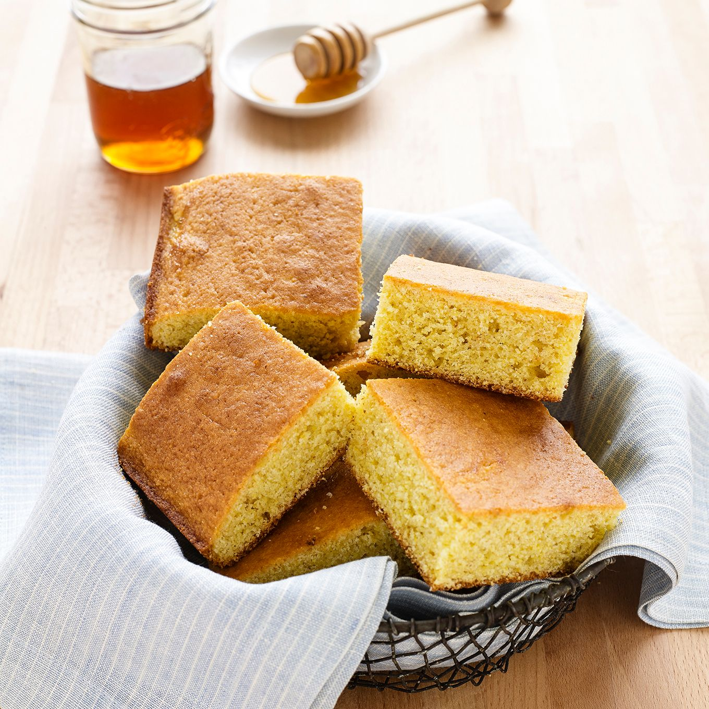

The best cornbread recipe is my grandmother's, and this is it—sweet and moist!
Ingredients
- ½ cup butter
- ⅔ cup white sugar
- 2 large eggs
- 1 cup buttermilk
- ½ teaspoon baking soda
- 1 cup cornmeal
- 1 cup all-purpose flour
- ¼ teaspoon salt
Recipe instructions
- Preheat the oven to 375 degrees F (175 degrees C). Grease an 8-inch square pan.
- Melt butter in a large skillet over medium heat. Remove from heat and stir in sugar. Quickly whisk in eggs.
- Combine buttermilk and baking soda in a small bowl; whisk mixture into the skillet. Stir in cornmeal, flour, and salt until well-blended and only a few lumps remain. Pour batter into the prepared pan.
- Bake in the preheated oven until a toothpick inserted in the center comes out clean, 30 to 40 minutes.
Return to top
Return to main page